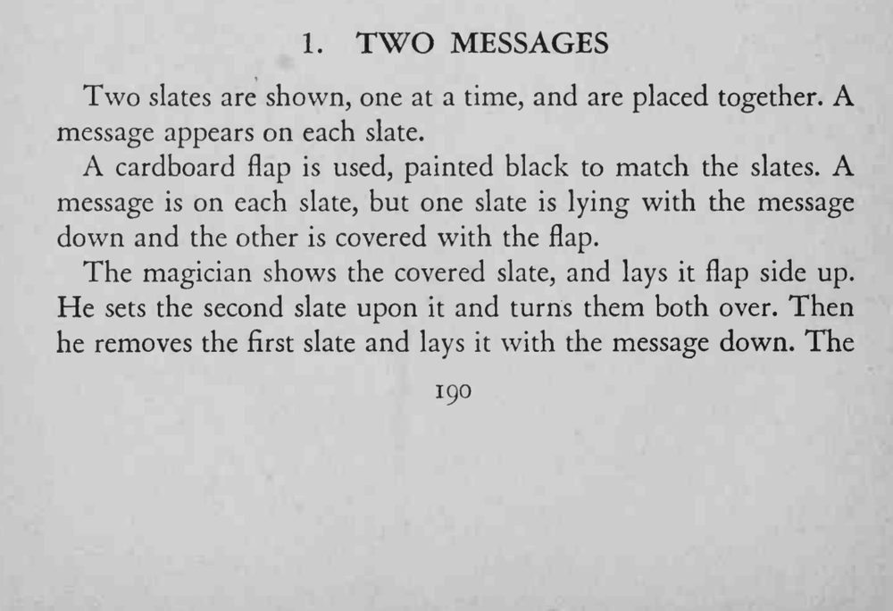
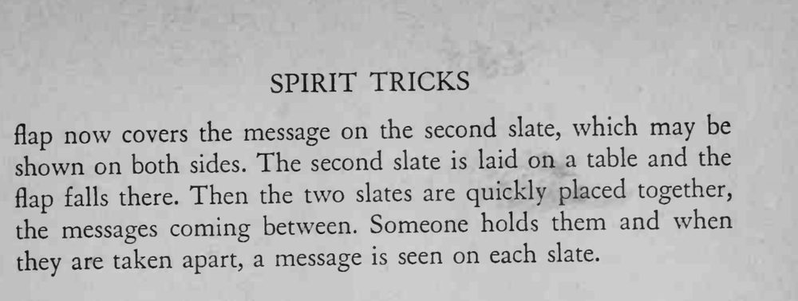

两块石板分别展示后叠在一起，再分开时，每块石板上都出现了一段信息。
flap 要刚好盖住字迹、颜色与石板一致，落下时别让观众看见。


Two slates are shown, one at a time, and are placed together. A message appears on each slate. A cardboard flap is used, painted black to match the slates. A message is on each slate, but one slate is lying with the message down and the other is covered with the flap. The magician shows the covered slate, and lays it flap side up. He sets the second slate upon it and turns them both over. Then he removes the first slate and lays it with the message down. The now covers the message on the second slate, which may be flap shown on both sides. The second slate is laid on a table and the flap falls there. Then the two slates are quickly placed together, messages coming between. Someone holds them and when the they are taken apart, a message is seen on each slate.